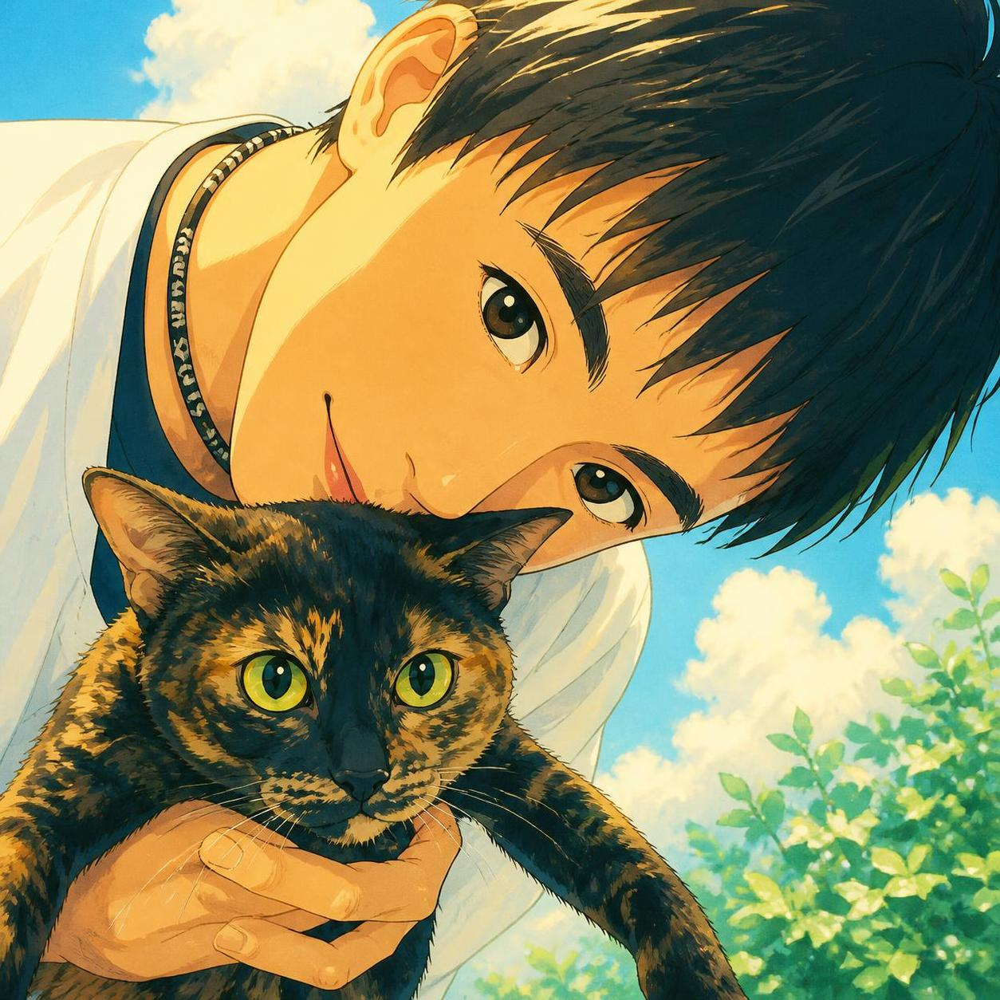
今田 雄輝
Yuki Imada
ADDRESS
滋賀県大津市
BIRTHPLACE
鹿児島県奄美市
MOTTO
笑う門には福来る
私について
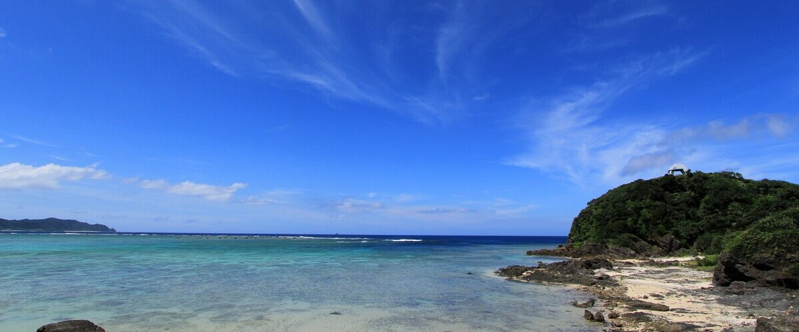
南の島から、いろいろな町へ。
生まれは鹿児島県奄美市。9歳まで南の島でのんびり暮らし、その後は引っ越し人生がスタートしました。これまでに住んだ町は8か所、小学校は4校。引っ越しの回数だけなら、なかなかのベテランです。
住んだことのある町
奄美市 / 香芝市（奈良）/ 枚方市 / 大阪市旭区 / 那覇市 / 守口市（大阪）/ 京都市西京区 / 大津市
奄美大島はこちら！
転校が多いと、こんなことも。
小学校を4校も渡り歩いた結果、どの学校の校歌も覚えていません。卒業アルバムを見ても、「この人、誰……？」と思われている可能性大。もはや、記憶に残る前に転校していたのかもしれません。
奄美と関西、同じ日本語なのに。
奄美から関西へ引っ越したとき、待っていたのは言葉の壁。もちろん日本語なのですが、知らない方言が飛び交うと、頭の中は「？？？」状態です。同じ日本語でもこんなに違うんだ……と実感しました。今は島の方言はほとんど話せずエセ関西弁話者です。
好奇心旺盛、考えることも好き。
好奇心は強め。何か気になることがあると、「なんでだろう？」から始まり、あれこれ調べたり考えたり。ひとつの疑問から別の疑問が生まれて、気づけば寄り道していることもあります。
好きなもの
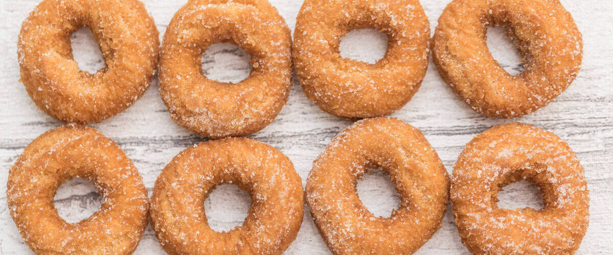
おいしいものと、知らない街には目がない。
食べ歩きが好きです。特にお気に入りなのは、香川のうどんと明石の玉子焼き。おいしいものを食べるためなら、ちょっとした遠出も楽しみのひとつです。知らない街を歩いて、地元ならではのお店や風景に出会うのも好き。目的地に向かっているはずなのに、途中で気になるものを見つけて寄り道……なんてこともあります。
- 食べ歩き：香川のうどん、明石の玉子焼き、近所のお手ごろな飲食店
- 甘いもの：スイーツ、カフェ、ビュッフェ
- お出かけ：散歩、街歩き、フェリー
スポーツ観戦は、いろいろな競技を。
スポーツ観戦も好きです。特定の競技ひと筋というより、いろいろな競技を見て楽しむタイプ。
- 卓球
- サッカー
- ラグビー
- バレーボール
- バスケットボール
- 陸上
- カーリング
海外ドラマは「あと1話」が危険。
海外ドラマは、一度ハマると続きが気になって止まらなくなります。あの「続きが気になる仕組み」は本当によくできています。特に印象に残っている作品はこちら。懐かしい作品が多めです。
- ER 緊急救命室
- ハウス・オブ・カード 野望の階段
- THE BRIDGE / ブリッジ
- 新スター・トレック
- エレメンタリー ホームズ＆ワトソン in NY
- ヴァンパイア・ダイアリーズ
- 4400 未知からの生還者
本屋さんは、知的好奇心のテーマパーク。
読書も好きです。マンガも読みますが、本では新書を手に取ることが多め。知らなかったことを知ったり、今までとは違う見方に出会ったりするのが楽しいです。大型書店に行くと、棚を眺めているだけでもワクワクします。
猫と地図と、好奇心。
猫が好きです。そして、地図を見るのも好きです。地図を眺めていると、「このあたりには何があるんだろう？」と、つい気になってしまいます。調べ始めると、目的地とは関係のない場所まで詳しくなっていることも。
猫のお話
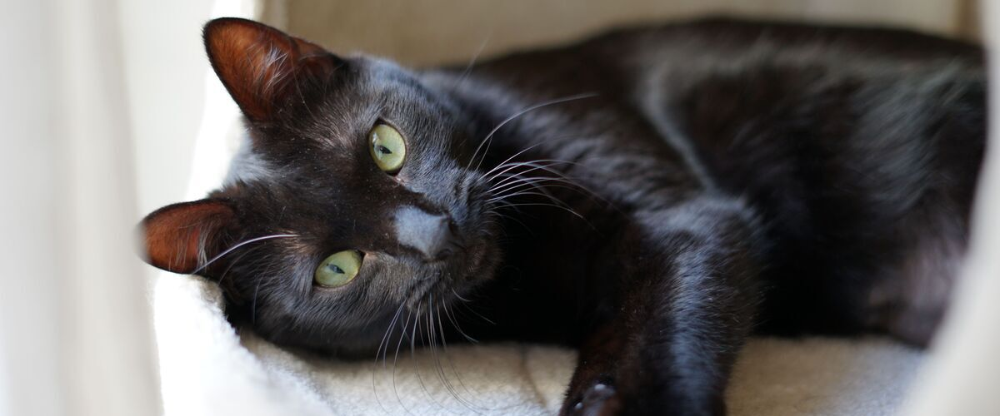
黒猫とさび猫、最強の兄妹。
以前、黒猫とさび猫の兄妹と暮らしていました。毛色は違っても、どちらも大切な家族です。
黒猫やさび猫は、毛色の好みが分かれるようであまり人気がありません。でも、実際にはそれぞれに個性があって、知れば知るほど魅力的。猫の魅力は、見た目だけでは語れません。
そんな猫たちの中でも、ぜひ知ってほしい「さび猫」の魅力をご紹介します。街でさび猫を見かけたときの目が変わる……かもしれません。
知れば知るほど奥深い。さび猫の魅力。
さび猫は、黒と赤茶色（オレンジ色）の毛が、複雑に混ざり合った毛色の猫です。三毛猫と同じく、毛色の組み合わせに特徴があり、白い毛がほとんど入らないのが一般的です。
その模様は、一匹ずつ違います。黒が多い子もいれば、赤茶色が目立つ子もいて、顔や体の模様もさまざま。パッと見ただけでは分からなくても、よく見ると「こんなところにも模様が！」という発見があります。まさに、見れば見るほど味が出る毛色です。
さび猫のここが魅力！
- 世界にひとつだけの模様
黒と赤茶色の混ざり方は一匹ずつ違い、見れば見るほど愛着が湧いてきます。 - 左右で色が分かれる「ブレイズ」模様
顔の左右で毛色が分かれるような模様の子もいます。面白い特徴のひとつです。 - ほとんどが女の子
さび猫は、遺伝の仕組みによってそのほとんどがメスです。 - 温厚で賢く、優しい
さび猫は穏やかで賢く、周囲をよく観察する子が多いと言われています。
さび猫ギャラリー
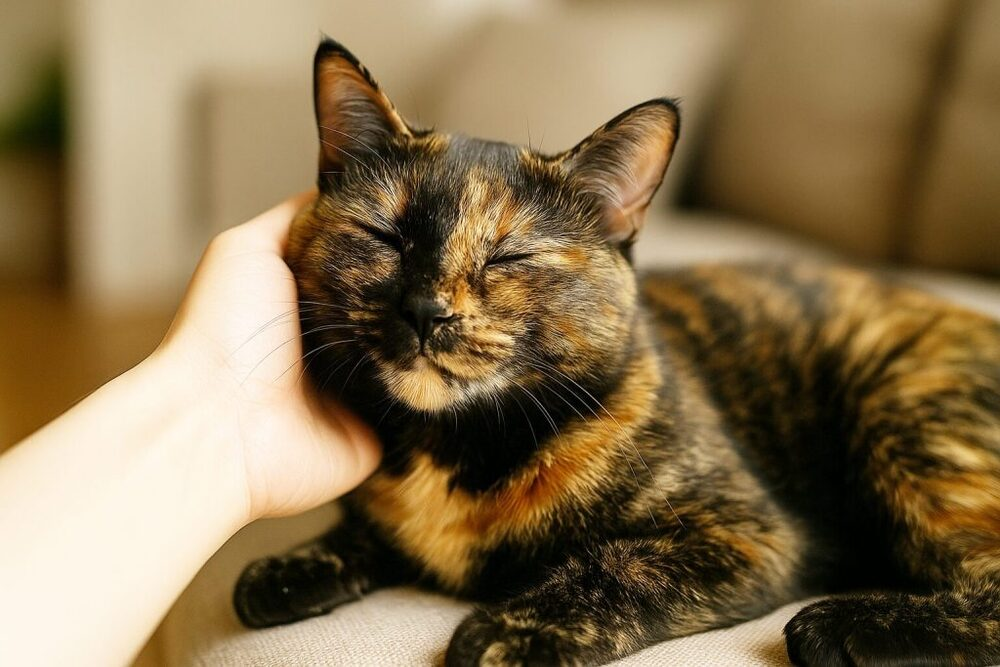
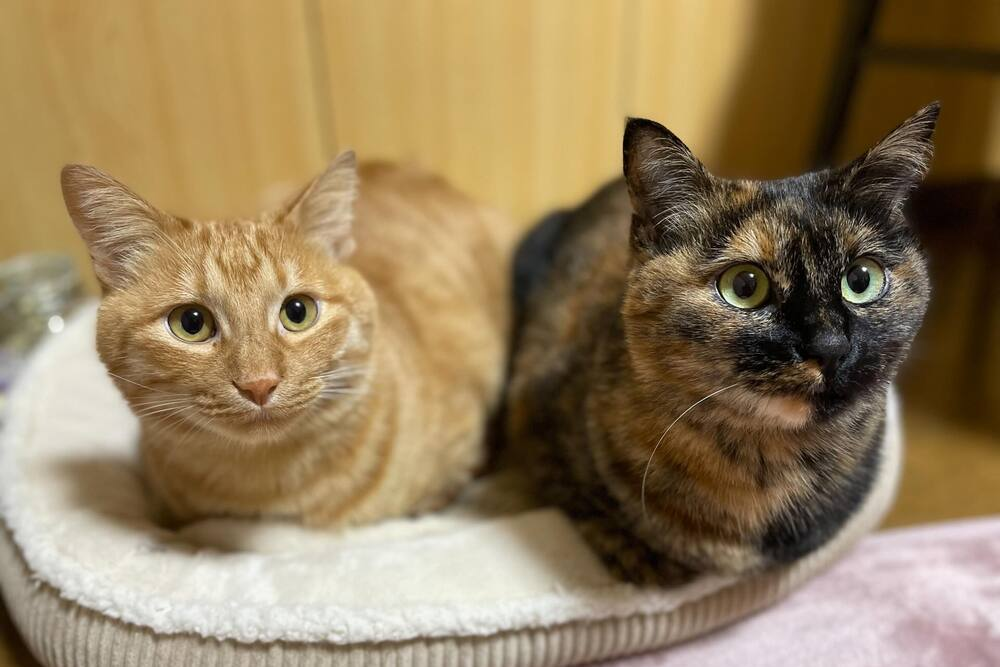
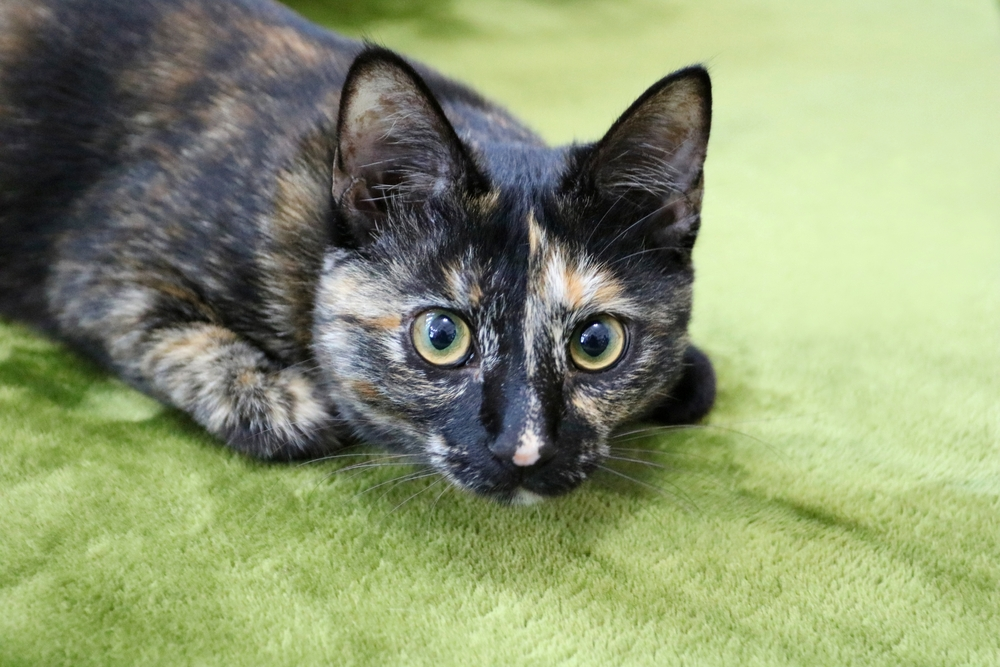
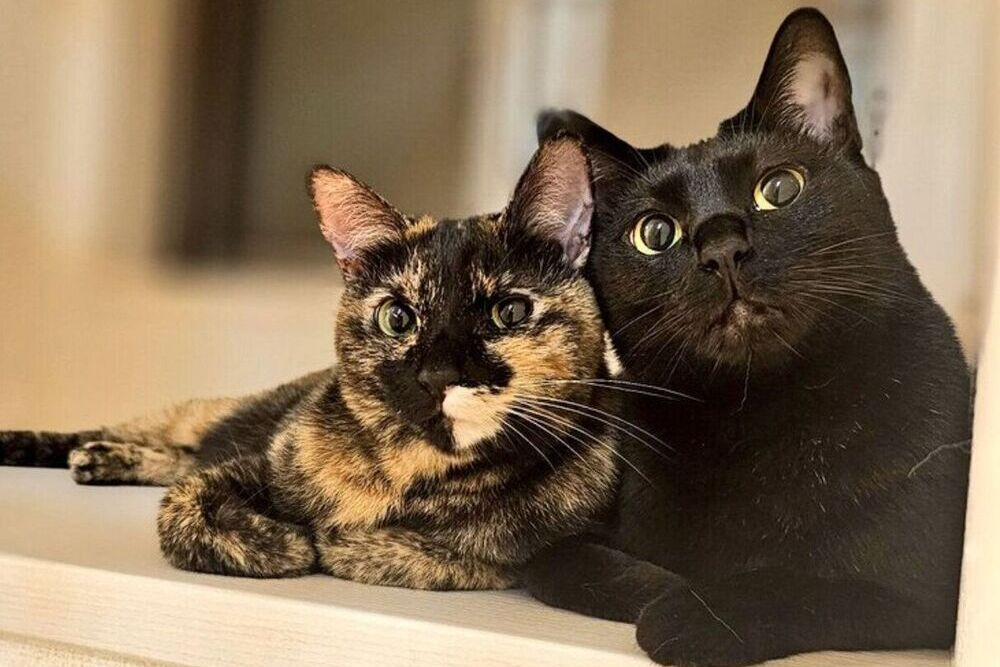
できること
Web制作は修行中。マーケティングは経験者。
Web制作のスキルは、まだまだ勉強中です。HTMLやCSSは、仕事でホームページの更新が必要になるたびに調べたり試したりしながら、少しずつ覚えてきました。
一方、デジタルマーケティングの経験は約20年。検索広告、SNS広告、LINEやメルマガを活用したCRM（顧客関係管理）、EC事業の立ち上げと拡販を行ってきました。
現在のスキルを自己採点してみました。
今の自分にできることを、星5つ満点で自己評価してみました。
| スキル | 自己評価 | 現状 |
|---|---|---|
| HTML | ★★☆☆☆ | 基本的な記述、ページの作成・更新 |
| CSS | ★★☆☆☆ | 基本的な装飾、レイアウトの調整 |
| JavaScript | ★☆☆☆☆ | 既存のコードを実装する程度 |
| PHP | ★☆☆☆☆ | 存在を知っている程度 |
| Dreamweaver | ★★☆☆☆ | 基本的な操作経験あり |
| Photoshop | ★☆☆☆☆ | トリミング、サイズ変更、簡単な画像補正 |
| Illustrator | ★☆☆☆☆ | 簡単なDMの作成 |
| 生成AI活用 | ★★☆☆☆ | ChatGPTを中心に、調べものや相談に活用 |
| デジタルマーケティング | ★★★★☆ | ここを頑張ってきました！ |
こんな資格を取りました。
これまでに取得した資格をまとめてみました。
取得資格一覧
- ITパスポート
- 情報セキュリティマネジメント
- 日商簿記3級
- 3級ファイナンシャル・プランニング技能士
- メンタルヘルス・マネジメント検定試験 II種（ラインケアコース）
- 愛玩動物救命士
マーケティングの主戦場はBtoB。
デジタルマーケティングを中心に約20年携わってきました。特に経験が多いのは、企業向けのBtoBマーケティングです。
Webを使った施策だけでなく、DM、セミナーやウェビナー、展示会といったアナログの施策も経験してきました。オンラインもオフラインも、目的は同じ。お客様との接点をつくり、事業の成果につなげることです。
どの施策でも、誰に、何を、どう伝え、次の行動につなげるのか。そんな視点を大切にしています。
なぜ今、Web制作を学んでいるのか。
マーケターの仕事は、Webクリエイターと協力して進める場面がたくさんあります。社内のクリエイターに依頼することもあれば、外部の制作会社やフリーランスの方と仕事をすることもあります。
そのとき、依頼側と制作側がお互いの仕事を理解していると、目的の共有がスムーズになり、話のすれ違いも減り、より良いものを効率よく作れます。
そんな思いから、今回の職業訓練に応募しました。制作側の知識を学び、社内外のクリエイターと同じ目線で話せるマーケターを目指しています。
仕事の遍歴
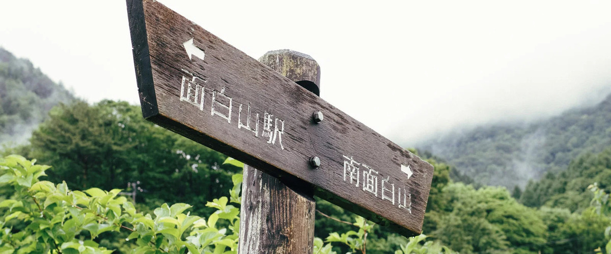
モノづくりから、Webとマーケティングの世界へ。
モノづくりの現場で、インターネットに出会う。
キャリアのスタートは、パナソニックのグループ会社。折り畳み式携帯電話のバッテリーパックを作る仕事に携わりました。中国への生産ライン移管プロジェクトでは、珠海（チューハイ）という町に約3か月滞在。
その後、会社で初めて個人用のパソコンが配布され、インターネットに触れることに。「これは面白い！ 」とその可能性に惹かれ、IT業界への転職を決意しました。
IT業界へ。いつの間にか何でも屋に。
Webサイト制作会社へ転職し、Web経由で顧客を獲得するビジネスに携わることに。その後、CMS（コンテンツ管理システム）の開発会社へ移り、マーケティングを担当しました。
ただし、社員は10名ほど。お客様のドメイン取得から採用面接まで、仕事の範囲はどんどん拡大。マーケティング担当のはずが、何でも屋になっていました。
会社の倒産を経て、マーケティングと組織づくりへ。
勤めていた会社が倒産するという転機も経験。幸い4か月後に次の職場が決まり、マーケティング部門の立ち上げやマーケターの育成に取り組みました。
さらに、人事・経理・総務から営業、製造の管理職まで、幅広い業務を兼任することに。大変なこともありましたが、社員みんなで力を合わせて取り組んだ結果、売上は2倍、社員数は3倍になりました。
京都で新規事業に挑戦。思わぬ幕引きも。
京都の会社へ転職し、新規事業の立ち上げとマーケティングを担当。しかし、会社がSNS上で炎上したことをきっかけに担当事業が終了。そのほかの事業も縮小し、退職することになりました。
そして、Webクリエイター科へ。
これまでマーケティングの仕事を通じて、Web制作者と協力する機会は数多くありました。だからこそ、今度は自分でもWeb制作の知識や技術を身につけたい。そんな思いから、職業訓練のWebクリエイター科で学んでいます。
これからの目標
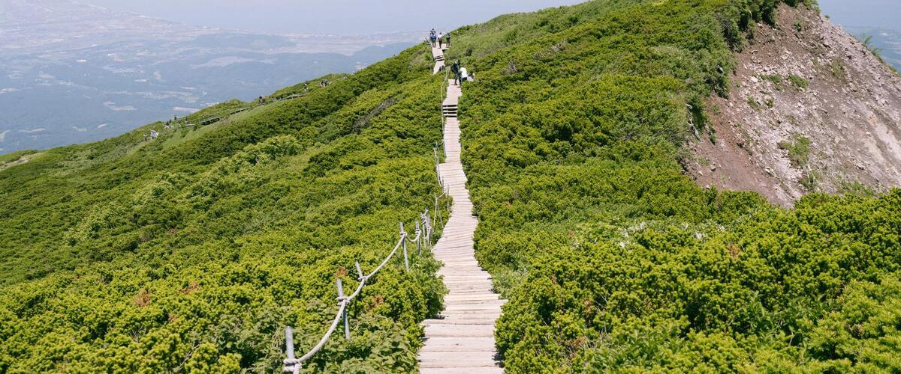
仕事も、健康も。長く続けていくために。
経験を生かして、企業の成長に貢献したい。
これまで培ってきたマーケティングの経験と、職業訓練で学んでいるWeb制作の知識。この2つを生かせる企業への就職を目指しています。
特に、マーケティングを通じて事業を拡大し、会社をもっと成長させたいと考えている企業に興味があります。これまでの経験に新しいスキルを掛け合わせ、事業の成長に貢献できる仕事をしていきたいと思っています。
いつまでも健康で、食べ歩きを楽しみたい。
もうひとつの目標は、いつまでも健康でいること。
数年前に体調を崩し、現在も定期的に通院しています。日常生活に支障はありませんが、通院を始めてからの2年間は、健康であることの大切さを身をもって感じました。
元気でなければ好きなことも楽しめません。知らない街を歩いて、おいしいものを食べる。そんな何気ない楽しみを、これからも長く続けていきたいです。
仕事では企業の成長に貢献し、プライベートでは食べ歩きを満喫する。
どちらも長く楽しめるよう、健康第一でいきたいと思います！
制作ノート
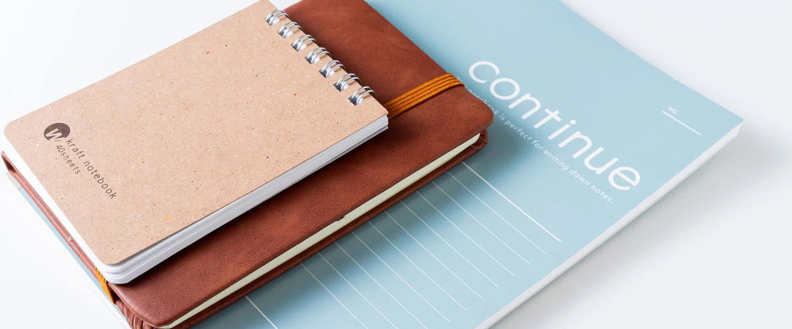
ページ全体
シンプルに、すっきりと。
テキストの多いページになるため、情報を詰め込みすぎず、すっきりとしたデザインを心掛けました。イメージしたのは、シンプルで読みやすいnoteを少しリッチにしたような雰囲気です。
デザインギャラリーを参考に。
デザインを考える際には、Webサイトのデザインギャラリーなども参考にしました。
どこで操作しても、中央カラムをスクロール。
マウスホイールを操作する場所にかかわらず、中央カラムのコンテンツがスクロールするように工夫しました。CSSだけでは実現できなかったため、ネット上で公開されているJavaScriptのコードをコピペして実装しています。
テキストは、ChatGPTと一緒にブラッシュアップ。
掲載する文章は、まず自分で伝えたい内容をラフに書き出し、ChatGPTに入力して文章の構成や表現をブラッシュアップしました。
左カラム
プロフィール画像は、AIの力を借りて。
プロフィール画像には、LINEで使用しているプロフィール画像をもとに、AIでイラスト化したものを採用しました。実物よりもかなり美化して描いてくれるのでおすすめです。
日本語の名前は、文字間を少し広めに。
日本語の名前「今田 雄輝」は、文字と文字の間隔を少し広げています。文字が詰まって見えないようにし、すっきりとした印象になるよう調整しました。CSSの letter-spacing で文字間隔を指定しています。
letter-spacing: 0.06em;
英語表記は、セリフ体でアクセントを。
英語の名前「Yuki Imada」には、日本語とは異なるフォントを使用しました。日本語と英語でフォントに変化をつけ、プロフィール欄にメリハリを持たせました。
font-family: Georgia, "Times New Roman", serif;
中央カラム
スクロールバーを非表示に。
スクロールバーを非表示にしています。CSSだけで実現できる方法を調べ、ネット上で公開されているコードを参考にして実装しました。
Googleマップは、iframeで埋め込み。
出身地の地図は、Googleマップの埋め込み機能を利用しています。表示したい場所を地図上で開き、ハンバーガーメニュー内の「地図を共有または埋め込む」から埋め込み用のHTMLコードを取得できます。
さび猫ギャラリーは、JavaScriptで実装。
さび猫ギャラリーは、JavaScriptを使って画像の切り替えや拡大表示を制御しています。この機能も、ネット上で公開されているコードを参考にして実装しました。
スキルの自己評価表は、tableタグで。
tableタグを使って表にまとめました。表は行や列の幅、余白、罫線、背景色など、調整する項目が多く、ChatGPTにコードを確認してもらいながら作りました。
スクロールに合わせた蛍光ペンの演出
CSSで蛍光ペンの色やアニメーションを設定し、JavaScriptで対象の文章が画面内に入ったことを検知して、少し待ってから色が伸びるようにしました。ChatGPTに相談しながら、アニメーションの開始タイミングや速度を調整し、強調したい文章に自然と目が向くように工夫しました。
右カラム
サイトタイトルは、さび猫カラーに。
右カラムに配置した「So, This is Me!」のタイトルには、さび猫の毛色をイメージしたカラーを取り入れました。黒と赤茶色が混ざり合う、さび猫ならではの色合いをデザインのアクセントにしています。インターネット上で公開されているCSSを参考にして実装しました。
英語のサブタイトルは、文字間を少し広めに。
「The profile of Yuki Imada」は、文字と文字の間隔を少し広げ、ゆったりとした印象になるように調整しました。CSSのletter-spacingを使い、文字間隔を0.04emに設定しています。
マウスを重ねると、ピンクの下線が登場。
ナビゲーションのリンクは、マウスカーソルを重ねるとピンク色の下線が表示されるようにしました。CSSを利用し、操作できる場所が視覚的に分かるようにしています。
ナビゲーションの現在位置を丸で表示。
現在表示しているセクションが分かりやすくなるように、ナビゲーションの左側にピンクの丸を表示させました。CSSとJavaScriptで実現しています。ここでもChatGPTのお世話になりました。
So, This is Me!
The profile of Yuki Imada